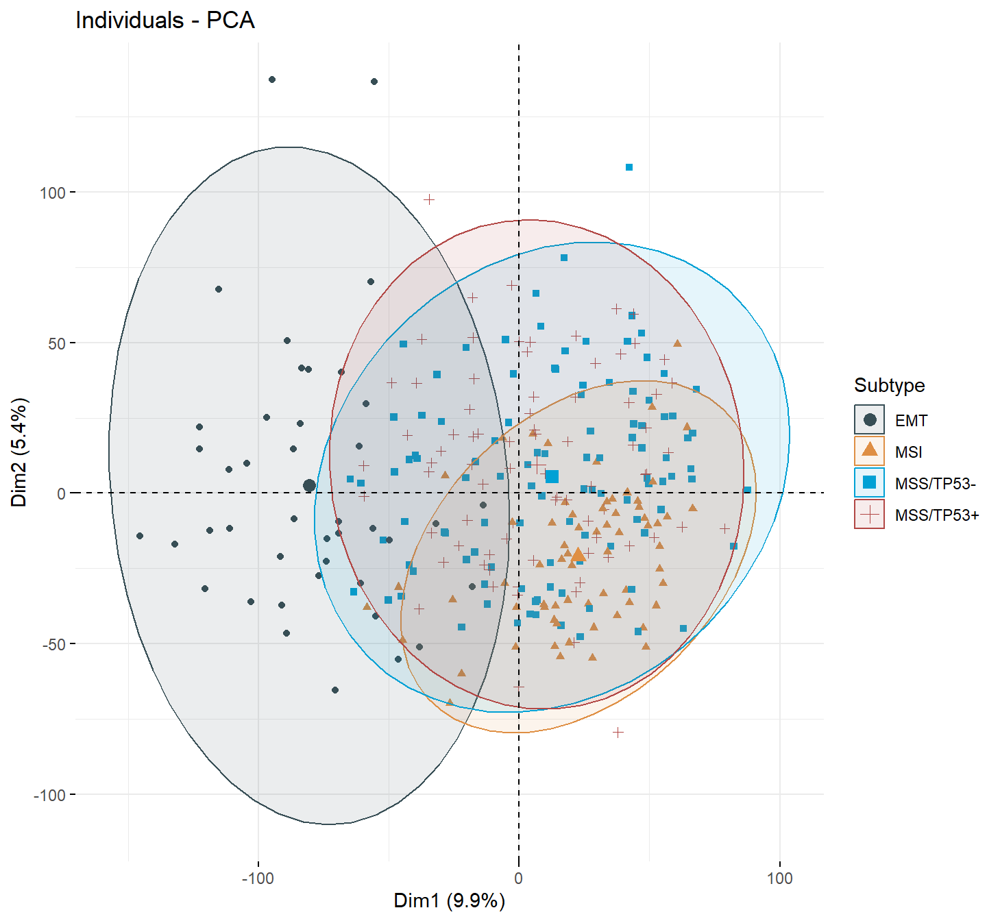
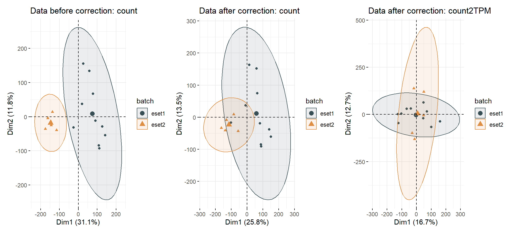

Chapter 3 RNA Data preprocessing
3.2 Download array data using GEOquery
Obtaining data set from GEO Gastric cancer: GSE62254 using GEOquery R package.
if (!requireNamespace("GEOquery", quietly = TRUE)) BiocManager::install("GEOquery")
library("GEOquery")
# NOTE: This process may take a few minutes which depends on the internet connection speed. Please wait for its completion.
eset_geo<-getGEO(GEO = "GSE62254", getGPL = F, destdir = "./")
eset <-eset_geo[[1]]
eset <-exprs(eset)
eset[1:5,1:5]## GSM1523727 GSM1523728 GSM1523729 GSM1523744 GSM1523745
## 1007_s_at 3.2176645 3.0624323 3.0279131 2.921683 2.8456013
## 1053_at 2.4050109 2.4394879 2.2442708 2.345916 2.4328582
## 117_at 1.4933412 1.8067380 1.5959665 1.839822 1.8326058
## 121_at 2.1965561 2.2812181 2.1865556 2.258599 2.1874363
## 1255_g_at 0.8698382 0.9502466 0.8125414 1.012860 0.94419933.3 Gene Annotation
Annotation of genes in the expression matrix and removal of duplicate genes.
## # A tibble: 6 × 2
## probe_id symbol
## <fct> <fct>
## 1 1007_s_at MIR4640
## 2 1053_at RFC2
## 3 117_at HSPA6
## 4 121_at PAX8
## 5 1255_g_at GUCA1A
## 6 1294_at MIR5193## id eff_length gc entrez symbol chr start end
## 1 ENSG00000000003 4536 0.3992504 7105 TSPAN6 X 100627109 100639991
## 2 ENSG00000000005 1476 0.4241192 64102 TNMD X 100584802 100599885
## 3 ENSG00000000419 9276 0.4252911 8813 DPM1 20 50934867 50958555
## 4 ENSG00000000457 6883 0.4117391 57147 SCYL3 1 169849631 169894267
## 5 ENSG00000000460 5970 0.4298157 55732 C1orf112 1 169662007 169854080
## 6 ENSG00000000938 3382 0.5644589 2268 FGR 1 27612064 27635277
## strand biotype
## 1 -1 protein_coding
## 2 1 protein_coding
## 3 -1 protein_coding
## 4 -1 protein_coding
## 5 1 protein_coding
## 6 -1 protein_coding
## description
## 1 tetraspanin 6 [Source:HGNC Symbol;Acc:HGNC:11858]
## 2 tenomodulin [Source:HGNC Symbol;Acc:HGNC:17757]
## 3 dolichyl-phosphate mannosyltransferase polypeptide 1, catalytic subunit [Source:HGNC Symbol;Acc:HGNC:3005]
## 4 SCY1-like, kinase-like 3 [Source:HGNC Symbol;Acc:HGNC:19285]
## 5 chromosome 1 open reading frame 112 [Source:HGNC Symbol;Acc:HGNC:25565]
## 6 FGR proto-oncogene, Src family tyrosine kinase [Source:HGNC Symbol;Acc:HGNC:3697]## id eff_length gc symbol mgi_id gene_type
## 1 ENSMUSG00000000001 3262 0.4350092 Gnai3 MGI:95773 protein_coding
## 2 ENSMUSG00000000003 902 0.3481153 Pbsn MGI:1860484 protein_coding
## 3 ENSMUSG00000000028 3506 0.4962921 Cdc45 MGI:1338073 protein_coding
## 4 ENSMUSG00000000031 2625 0.5588571 H19 MGI:95891 lncRNA
## 5 ENSMUSG00000000037 6397 0.4377052 Scml2 MGI:1340042 protein_coding
## 6 ENSMUSG00000000049 1594 0.5050188 Apoh MGI:88058 protein_coding
## start end transcript_id ont
## 1 108014596 108053462 <NA> <NA>
## 2 76881507 76897229 <NA> <NA>
## 3 18599197 18630737 <NA> <NA>
## 4 142129262 142131886 <NA> <NA>
## 5 159865521 160041209 <NA> <NA>
## 6 108234180 108305222 <NA> <NA>3.3.1 For Array data: HGU133PLUS-2 (Affaymetrix)
# Conduct gene annotation using `anno_hug133plus2` file; If identical gene symbols exists, these genes would be ordered by the mean expression levels. The gene symbol with highest mean expression level is selected and remove others.
eset<-anno_eset(eset = eset,
annotation = anno_hug133plus2,
symbol = "symbol",
probe = "probe_id",
method = "mean")
eset[1:5, 1:3]## GSM1523727 GSM1523728 GSM1523729
## SH3KBP1 4.327974 4.316195 4.351425
## RPL41 4.246149 4.246808 4.257940
## EEF1A1 4.293762 4.291038 4.262199
## COX2 4.250288 4.283714 4.270508
## LOC101928826 4.219303 4.219670 4.2132523.4 Download RNAseq data using UCSCXenaTools
if (!requireNamespace("UCSCXenaTools", quietly = TRUE)) BiocManager::install("UCSCXenaTools")
library(UCSCXenaTools)
# NOTE: This process may take a few minutes which depends on the internet connection speed. Please wait for its completion.
eset_stad<-XenaGenerate(subset = XenaCohorts =="GDC TCGA Stomach Cancer (STAD)") %>%
XenaFilter(filterDatasets = "TCGA-STAD.htseq_counts.tsv") %>%
XenaQuery() %>%
XenaDownload() %>%
XenaPrepare()
eset_stad[1:5, 1:3]3.5 Normalization and Gene annotation
Transform gene expression matrix into TPM format, and conduct subsequent annotation.
# Remove the version numbers in Ensembl ID.
eset_stad$Ensembl_ID<-substring(eset_stad$Ensembl_ID, 1, 15)
eset_stad<-column_to_rownames(eset_stad, var = "Ensembl_ID")
# Revert back to original format because the data from UCSC was log2(x+1)transformed.
eset_stad<-(2^eset_stad)+1
eset_stad<-count2tpm(countMat = eset_stad, idType = "Ensembl", org="hsa", source = "local" )
eset_stad[1:5,1:5]3.6 Identifying outlier samples
Take ACRG microarray data for example

## [1] "GSM1523817" "GSM1523858" "GSM1523984" "GSM1523988" "GSM1524030"Removing potential outlier samples
3.7 PCA analysis of molecular subtypes
data("pdata_acrg")
res<- iobr_pca(data = eset1,
is.matrix = TRUE,
scale = TRUE,
is.log = FALSE,
pdata = pdata_acrg,
id_pdata = "ID",
group = "Subtype",
geom.ind = "point",
cols = "normal",
palette = "jama",
repel = FALSE,
ncp = 5,
axes = c(1, 2),
addEllipses = TRUE)##
## CIN EBV EMT GS MSI MSS/TP53- MSS/TP53+
## 0 0 42 0 68 106 79
## [1] ">>-- colors for PCA: "
3.8 Batch effect correction
3.8.1 For microarray data
Obtaining another data set from GEO Gastric cancer: GSE57303 using GEOquery R package.
# NOTE: This process may take a few minutes which depends on the internet connection speed. Please wait for its completion.
eset_geo<-getGEO(GEO = "GSE57303", getGPL = F, destdir = "./")
eset2 <-eset_geo[[1]]
eset2 <-exprs(eset2)
eset2[1:5,1:5]## GSM1379261 GSM1379262 GSM1379263 GSM1379264 GSM1379265
## 1007_s_at 8.34746 9.67994 8.62643 8.59301 8.63046
## 1053_at 5.07972 4.46377 5.29685 5.78983 4.33359
## 117_at 5.65558 4.48732 4.21615 5.47984 5.20816
## 121_at 5.95123 7.09056 6.19903 5.89872 5.91323
## 1255_g_at 1.66923 1.98758 1.73083 1.56687 1.63332Annotation of genes in the expression matrix and removal of duplicate genes.
eset2<-anno_eset(eset = eset2,
annotation = anno_hug133plus2,
symbol = "symbol",
probe = "probe_id",
method = "mean")
eset2[1:5, 1:5]## GSM1379261 GSM1379262 GSM1379263 GSM1379264 GSM1379265
## ND4 13.1695 13.1804 13.0600 12.4544 13.0457
## ATP6 13.1433 13.0814 13.0502 12.4831 13.1168
## SH3KBP1 12.9390 13.1620 12.9773 12.8745 13.1169
## COX2 13.0184 13.0489 12.8621 12.7489 12.9732
## RPL41 13.0201 12.6034 12.7929 13.0153 12.9404eset_com <- remove_batcheffect( eset1 = eset1,
eset2 = eset2,
eset3 = NULL,
id_type = "symbol",
data_type = "array",
cols = "normal",
palette = "jama",
log2 = TRUE,
check_eset = TRUE,
adjust_eset = TRUE,
repel = FALSE,
path = "result")##
## eset1 eset2
## 295 70
## [1] ">>-- colors for PCA: "
##
## eset1 eset2
## 295 70
## [1] ">>-- colors for PCA: "
## [1] 21752 3653.8.2 For RNAseq count data
## TCGA-BR-6455 TCGA-BR-7196 TCGA-BR-8371 TCGA-BR-8380
## ENSG00000000003 8006 2114 767 1556
## ENSG00000000005 1 0 5 5
## ENSG00000000419 3831 2600 1729 1760
## ENSG00000000457 1126 745 1040 1260
## ENSG00000000460 857 463 231 432
## ENSG00000000938 758 1126 557 557
## TCGA-BR-8592 TCGA-BR-8686 TCGA-BR-A4IV TCGA-BR-A4J4
## ENSG00000000003 2806 2923 1524 7208
## ENSG00000000005 60 1 22 2
## ENSG00000000419 2273 1934 2838 4418
## ENSG00000000457 1814 707 1683 1335
## ENSG00000000460 635 323 270 423
## ENSG00000000938 828 666 760 597
## TCGA-BR-A4J9 TCGA-FP-7916
## ENSG00000000003 711 2747
## ENSG00000000005 0 3
## ENSG00000000419 2426 2824
## ENSG00000000457 1590 1672
## ENSG00000000460 276 773
## ENSG00000000938 370 688## TCGA-2F-A9KO TCGA-2F-A9KP TCGA-2F-A9KQ TCGA-2F-A9KR
## ENSG00000000003 6092 11652 5426 4383
## ENSG00000000005 0 4 1 1
## ENSG00000000419 3072 2656 1983 2061
## ENSG00000000457 1302 984 1134 1092
## ENSG00000000460 779 924 421 386
## ENSG00000000938 436 116 312 590
## TCGA-2F-A9KT
## ENSG00000000003 3334
## ENSG00000000005 0
## ENSG00000000419 2930
## ENSG00000000457 496
## ENSG00000000460 318
## ENSG00000000938 362## Found 2 batches
## Using null model in ComBat-seq.
## Adjusting for 0 covariate(s) or covariate level(s)
## Estimating dispersions
## Fitting the GLM model
## Shrinkage off - using GLM estimates for parameters
## Adjusting the data## Warning in count2tpm(countMat = combined.expr.combat, idType = id_type, :
## >>>--- Omit 1263 genes of which length is not available !##
## eset1 eset2
## 10 5
## [1] ">>-- colors for PCA: "
##
## eset1 eset2
## 10 5
## [1] ">>-- colors for PCA: "
##
## eset1 eset2
## 10 5
## [1] ">>-- colors for PCA: "
## TCGA-BR-6455 TCGA-BR-7196 TCGA-BR-8371 TCGA-BR-8380
## ENSG00000000003 10264 3536 1710 2964
## ENSG00000000005 1 0 4 5
## ENSG00000000419 4500 3099 2111 2167
## ENSG00000000457 1203 707 1106 1353
## ENSG00000000460 1059 590 310 560
## ENSG00000000938 731 1202 507 485
## TCGA-BR-8592 TCGA-BR-8686 TCGA-BR-A4IV TCGA-BR-A4J4
## ENSG00000000003 4761 3964 3115 9565
## ENSG00000000005 33 1 14 3
## ENSG00000000419 2782 2270 3444 5176
## ENSG00000000457 2089 817 1845 1469
## ENSG00000000460 810 405 368 548
## ENSG00000000938 769 723 677 532
## TCGA-BR-A4J9 TCGA-FP-7916 TCGA-2F-A9KO TCGA-2F-A9KP
## ENSG00000000003 1739 4371 2812 6796
## ENSG00000000005 0 3 0 10
## ENSG00000000419 2943 3362 2189 1849
## ENSG00000000457 1804 2044 994 817
## ENSG00000000460 371 959 495 584
## ENSG00000000938 281 654 456 156
## TCGA-2F-A9KQ TCGA-2F-A9KR TCGA-2F-A9KT
## ENSG00000000003 1971 1429 1057
## ENSG00000000005 1 1 0
## ENSG00000000419 1355 1420 2094
## ENSG00000000457 916 876 438
## ENSG00000000460 251 230 190
## ENSG00000000938 353 604 3833.9 References
Wang et al., (2019). The UCSCXenaTools R package: a toolkit for accessing genomics data from UCSC Xena platform, from cancer multi-omics to single-cell RNA-seq. Journal of Open Source Software, 4(40), 1627, https://doi.org/10.21105/joss.01627
Zhang et al., ComBat-seq: batch effect adjustment for RNA-seq count data, NAR Genomics and Bioinformatics, Volume 2, Issue 3, September 2020, lqaa078, https://doi.org/10.1093/nargab/lqaa078
Leek, J. T., et al., (2012). The sva package for removing batch effects and other unwanted variation in high-throughput experiments. Bioinformatics, 28(6), 882-883.